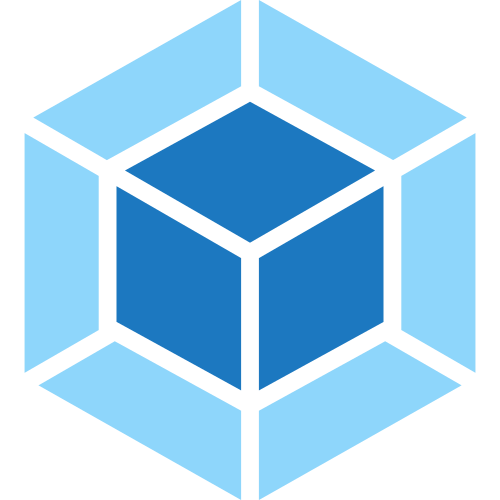

Développeur front-end depuis 6 ans, j'aime explorer, expérimenter, et apprendre au quotidien à travers toutes les possibilités que ce métier offre.
J'attache une grande importance à la qualité finale des projets sur lesquels je travaille, particulièrement sur des sujets tels que la performance et l'accessibilité web.
Mes outils
React

Webpack
Javascript
Zeplin
Dareboost
Mon expérience
2017 - aujourd'hui
Développeur front-end chez LeLynx
Refonte du site de contenu sous Wordpress et refonte du workflow de gulp vers webpack. Développement front-end du comparateur d'énergie sous Angular. Participation au suivi et à l'évolution du produit santé.
2012 -2017
Développeur front-end chez Actualys
Développement front-end de sites sous Drupal tels que monnaie de paris
Développement front d'applications métier sous Symfony.
2012
Développeur web chez Noomiz
Développement d'applications Facebook pour le festival Rock en Seine, la fédération française de football ...
Développement d'un jeu de cartes à collectionner similaire à Is Cool.
Ma formation
2014
Formation à l'accessibilité chez Accessiweb
Mise en application d'une méthodologie d'évaluation de l'accessibilité d'un site web selon le référentiel d'accessiweb.
2011-2012
Bachelor développeur web chez Cifacom
Découverte des frameworks php Zend et Symfony.
Initiation au gestionnaires de versions git et svn.
Développement d'un site complet en Ruby on Rails.
2009-2011
Titre professionel intégrateur web au CNA-CEFAG
Formation à HTML, CSS, Javascript et PHP.
Développement d'un site complet "from scratch" avec back-office en fin de cursus.